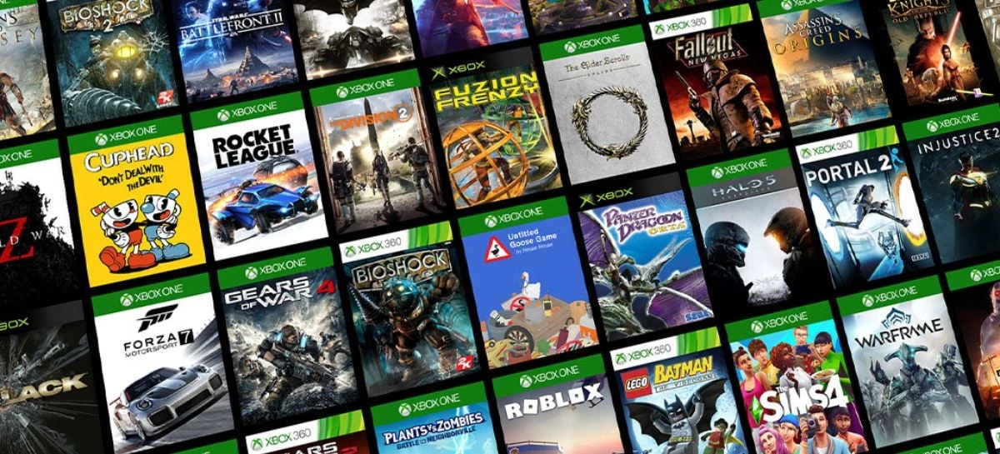
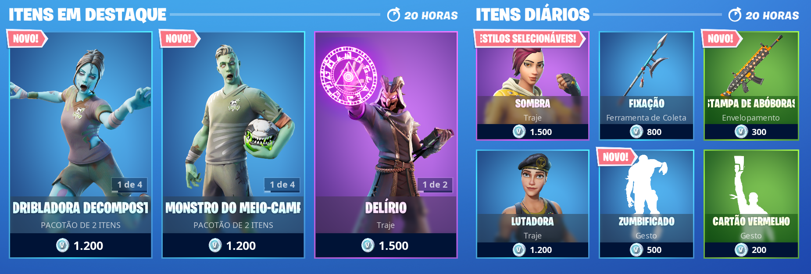

Arrecadação - Jogos e Bilheterias
A arrecadação dos jogos e consoles atualmente ocorre por meio de diferentes canais e métodos. Veja em seguida algumas das maneiras mais comuns que são utilizadas:
Vendas de jogos físicos: A venda de jogos em formato físico ainda é uma parte significativa da arrecadação. Os jogos são produzidos em discos ópticos (como CDs e DVDs) ou cartuchos e distribuídos para lojas especializadas, varejistas e grandes cadeias de lojas. Os consumidores compram esses jogos e os desenvolvedores/empresas recebem uma parte do valor de venda.
Vendas digitais: Com o crescimento da internet e das plataformas de distribuição digital, as vendas de jogos digitais se tornaram cada vez mais populares. Plataformas como a Steam (para PC), PlayStation Store (para consoles PlayStation) e Xbox Store (para consoles Xbox) permitem que os jogadores comprem jogos diretamente por download. As desenvolvedoras e distribuidoras recebem uma porcentagem do valor das vendas digitais.

Microtransações e conteúdo adicional: Muitos jogos modernos incluem a opção de microtransações, onde os jogadores podem comprar itens virtuais, pacotes de expansão, skins, personagens adicionais, entre outros conteúdos extras. Essas compras são feitas dentro do jogo, geralmente usando moedas virtuais ou dinheiro real. As empresas recebem uma parte dessas transações, o que pode ser uma fonte significativa de receita para jogos gratuitos ou de baixo custo.
Assinaturas e serviços online: Alguns consoles e plataformas oferecem serviços de assinatura, como Xbox Game Pass, PlayStation Plus e Nintendo Switch Online, que permitem aos jogadores acesso a uma biblioteca de jogos por uma taxa mensal ou anual. As empresas recebem uma parte da receita dessas assinaturas. Além disso, serviços de streaming de jogos, como o Google Stadia e o Xbox Cloud Gaming (anteriormente conhecido como xCloud), também podem gerar receita por meio de assinaturas ou vendas de jogos em nuvem.
Publicidade e patrocínios: Alguns jogos, especialmente aqueles em dispositivos móveis e gratuitos para jogar, incluem anúncios ou parcerias de patrocínio como forma de monetização. As empresas podem receber pagamento pelos anúncios exibidos no jogo ou por meio de acordos de patrocínio com marcas.
| Jogos | Valor Arrecadado |
|---|---|
| Minecraft | US$ 2,6 bilhões |
| Fortnite | US$ 9,16 bilhões |
| GTA V (Grand Theft Auto V) | US$ 7,68 bilhões |